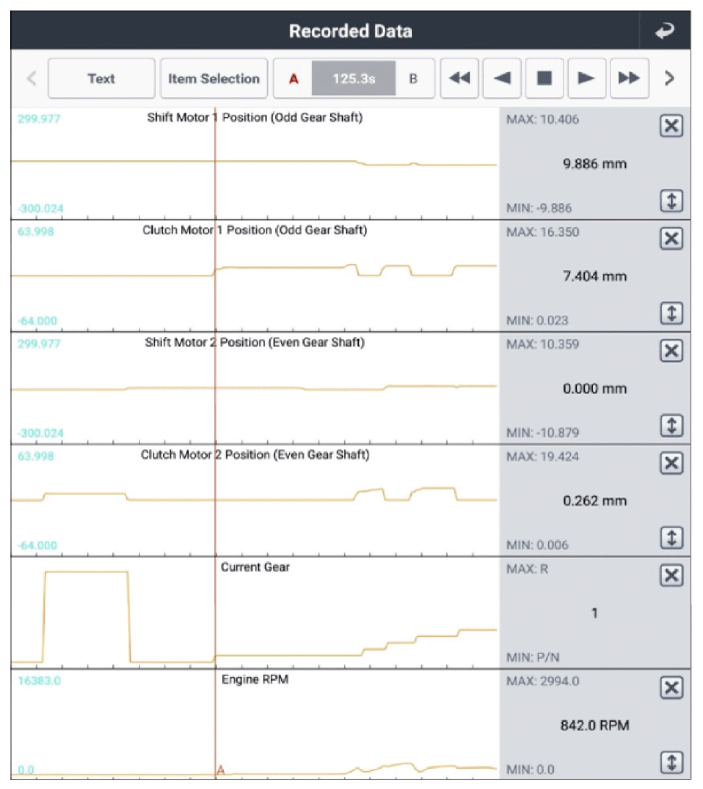

Monitor GDS Data
WARNING: This page is about a different variant/trim than selected.
- Connect GDS to Data Link Connector (DLC).
- Lift vehicle with suitable lift and Engine "ON".
- Operate vehicle or system in accordance with Enable Condition in DTC Detecting Condition.
- Monitor selected parameters shown below in "Current Data" with GDS.
Specification
: Refer to illustration below
 Courtesy of HYUNDAI MOTOR AMERICA
|